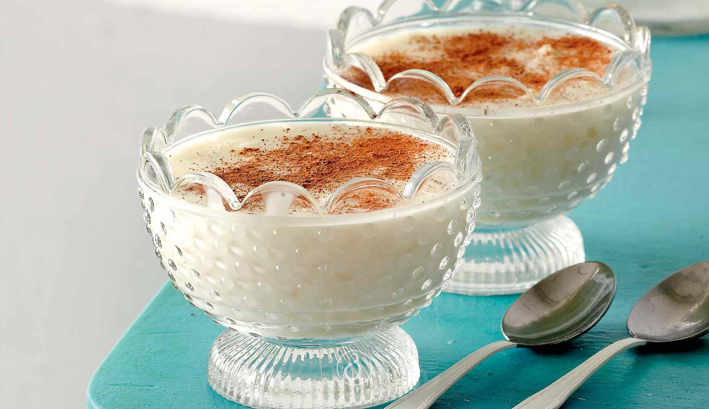

Ryzogalo

Description
This sweet bowl consisting of rice and milk (Ryzogalo means literally "Rice-milk") will surely blow your mind!
It is for sure an alternative and -most importantly- healthy choice for your sweet cravings.
Ingredients
- Milk
- Water
- Rice
- Sugar
- Cinnamon
Steps
- Boil the water and then pour the rice in it.
- When the rice is boiled, pour the milk.
- Add some sugar and stir.
- After 30 minutes, put the mix on small bowls.
- Put the bowls inside the fridge for 10 minutes, and after that, sprinkle with cinnamon.
- Bon appetit!